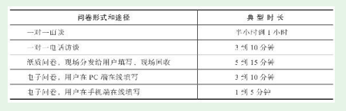

1. 第3节 调查问卷的设计
- 调查问卷的设计有三个方面要重点考虑：问卷时长（篇幅）、问题类型、问卷结构（如何安排问题的顺序）
1.1. 问卷时长
- 一般而言，我们都希望从用户那里获得尽量多的信息，但实战中会受到问卷时长的限制。

1.2. 问题类型
开放性可以将问题划分为三种类型：封闭式问题（只能在给出的有限选项中做选择）、开放式问题（没有给出确定选项，由用户自己填写）、半封闭式问题（以上两种类型结合）
所以一份问卷中通常开放式问题不能太多，而且要描述清楚让用户正确填写。例如，“您投资的第一个P2P平台是_（请填写这个平台的中文名称）”
1.3. 问卷结构
- 问卷结构应该符合逻辑顺序，和用户的思维顺序基本一致，从而便于用户理解。
- 喇叭形问卷结构。这个结构以容易回答的问题开始，然后问题的难度逐渐增加。紧接着第一个喇叭的是另一个调转方向的喇叭——接下来的问题的难度又降低了。在较长的问卷中，两个方向的喇叭可以多次交替。
1.4. 随手练习
- 我朋友圈的产品：王昱森（已入职）、谢琪淼（待入职）、徐程阳（想转入），产品部门同事
1.5. 问卷的优化
- 网上有问卷的模板，但需要根据实际情况改变，例如喇叭状结构